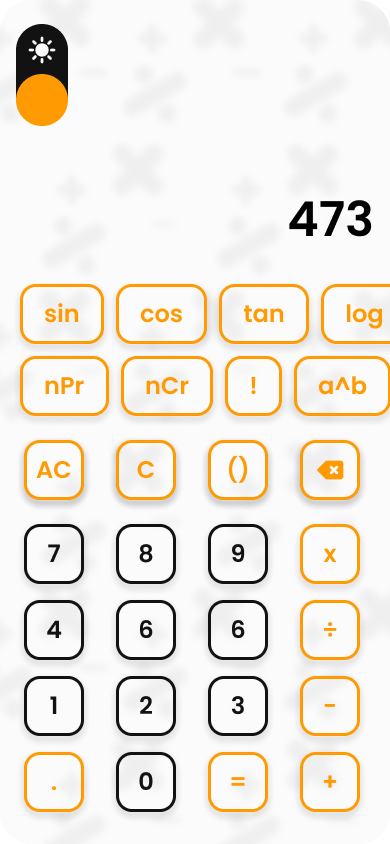
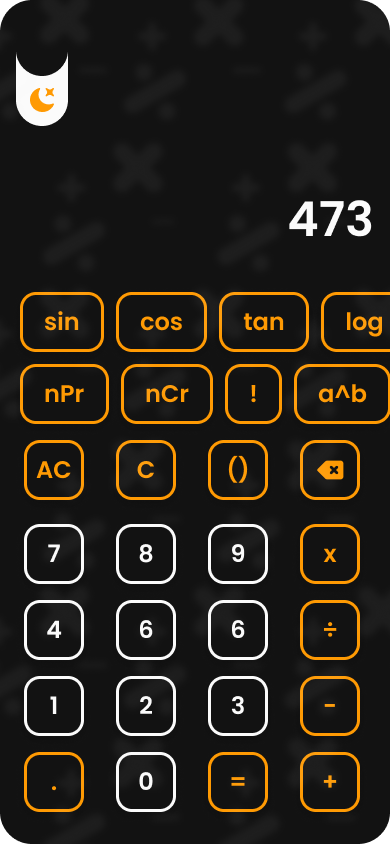

Galeri Antarmuka
Lihat bagaimana RAR Calculator memberikan pengalaman kalkulasi yang menyenangkan dan efisien.

Mode Terang
Antarmuka bersih dengan tema terang

Fungsi Sains
Akses mudah ke semua fungsi ilmiah

Mode Gelap
Tema gelap yang nyaman di malam hari